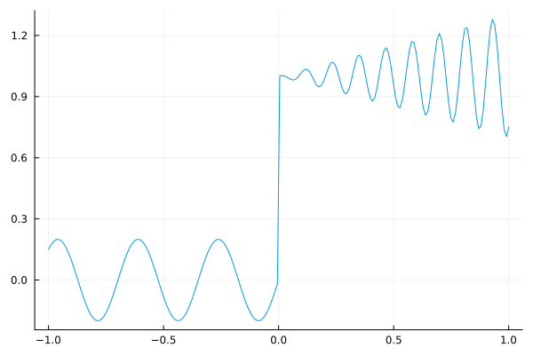
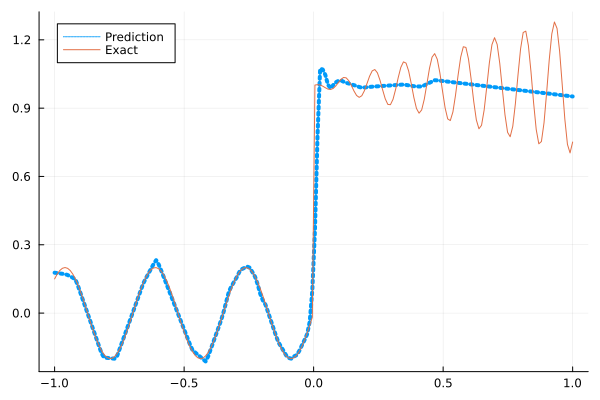
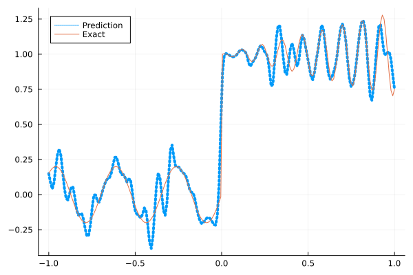
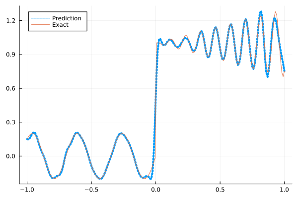
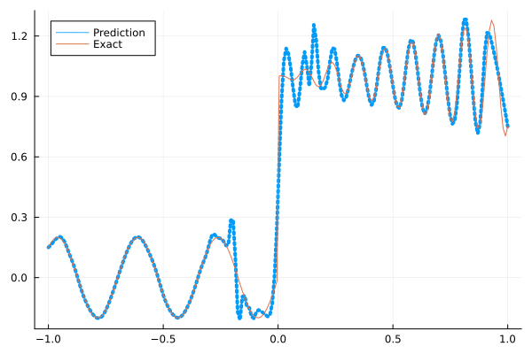
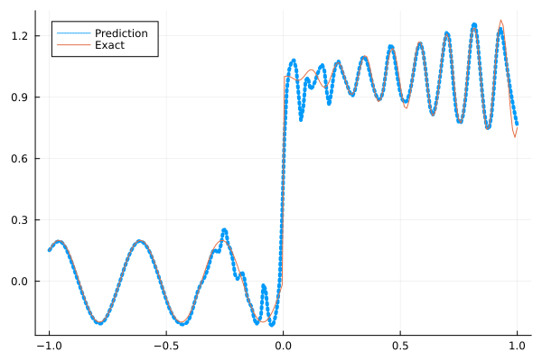

Fitting a nonlinear discontinuous function
This example is taken from here. However, we do not use adaptive activation functions. Instead, we show that using suitable non-parametric activation functions immediately performs better.
Consider the following discontinuous function with discontinuity at $x=0$:
\[u(x)= \begin{cases}0.2 \sin (18 x) & \text { if } x \leq 0 \\ 1+0.3 x \cos (54 x) & \text { otherwise }\end{cases}\]
The domain is $[-1,1]$. The number of training points used is 50.
Import pacakges
using Lux, Sophon
using NNlib, Optimisers, Plots, Random, StatsBase, ZygoteDataset
function u(x)
if x <= 0
return 0.2 * sin(18 * x)
else
return 1 + 0.3 * x * cos(54 * x)
end
end
function generate_data(n=50)
x = reshape(collect(range(-1.0f0, 1.0f0, n)), (1, n))
y = u.(x)
return (x, y)
endgenerate_data (generic function with 2 methods)Let's visualize the data.
x_train, y_train = generate_data(50)
x_test, y_test = generate_data(200)
Plots.plot(vec(x_test), vec(y_test),label=false)
Naive Neural Nets
First we demonstrate show naive fully connected neural nets could be really bad at fitting this function.
model = FullyConnected((1,50,50,50,50,1), relu)Chain(
layer_1 = Dense(1 => 50, relu), # 100 parameters
layer_2 = Dense(50 => 50, relu), # 2_550 parameters
layer_3 = Dense(50 => 50, relu), # 2_550 parameters
layer_4 = Dense(50 => 50, relu), # 2_550 parameters
layer_5 = Dense(50 => 1), # 51 parameters
) # Total: 7_801 parameters,
# plus 0 states, summarysize 80 bytes.Train the model
function train(model, x, y)
ps, st = Lux.setup(Random.default_rng(), model)
opt = Adam()
st_opt = Optimisers.setup(opt,ps)
function loss(model, ps, st, x, y)
y_pred, _ = model(x, ps, st)
mes = mean(abs2, y_pred .- y)
return mes
end
for i in 1:2000
gs = gradient(p->loss(model,p,st,x,y), ps)[1]
st_opt, ps = Optimisers.update(st_opt, ps, gs)
if i % 100 == 1 || i == 2000
println("Epoch $i || ", loss(model,ps,st,x,y))
end
end
return ps, st
endtrain (generic function with 1 method)Plot the result
@time ps, st = train(model, x_train, y_train)
y_pred = model(x_test,ps,st)[1]
Plots.plot(vec(x_test), vec(y_pred),label="Prediction",line = (:dot, 4))
Plots.plot!(vec(x_test), vec(y_test),label="Exact",legend=:topleft)Epoch 1 || 0.1573031558084111
Epoch 101 || 0.016145334609206932
Epoch 201 || 0.0156729970066295
Epoch 301 || 0.014681601163551071
Epoch 401 || 0.012977793146894052
Epoch 501 || 0.012173592261189683
Epoch 601 || 0.011397848210260108
Epoch 701 || 0.010047513119354163
Epoch 801 || 0.008404937233992925
Epoch 901 || 0.007761133723948592
Epoch 1001 || 0.008316804816673951
Epoch 1101 || 0.007517907624037277
Epoch 1201 || 0.007563484320031775
Epoch 1301 || 0.007499382892572936
Epoch 1401 || 0.007656078167959998
Epoch 1501 || 0.007496881242101976
Epoch 1601 || 0.007505100480013567
Epoch 1701 || 0.007478237001729515
Epoch 1801 || 0.007514942784962393
Epoch 1901 || 0.007463879939820449
Epoch 2000 || 0.007455413951719107
15.572947 seconds (15.62 M allocations: 1.484 GiB, 3.02% gc time, 94.70% compilation time)
Siren
We use four hidden layers with 50 neurons in each.
model = Siren(1,50,50,50,50,1; omega = 30f0)Chain(
layer_1 = Dense(1 => 50, sin), # 100 parameters
layer_2 = Dense(50 => 50, sin), # 2_550 parameters
layer_3 = Dense(50 => 50, sin), # 2_550 parameters
layer_4 = Dense(50 => 50, sin), # 2_550 parameters
layer_5 = Dense(50 => 1), # 51 parameters
) # Total: 7_801 parameters,
# plus 0 states, summarysize 88 bytes.@time ps, st = train(model, x_train, y_train)
y_pred = model(x_test,ps,st)[1]
Plots.plot(vec(x_test), vec(y_pred),label="Prediction",line = (:dot, 4))
Plots.plot!(vec(x_test), vec(y_test),label="Exact",legend=:topleft)Epoch 1 || 0.9415177665069493
Epoch 101 || 0.0010567114498427912
Epoch 201 || 5.774871523499315e-5
Epoch 301 || 3.2839055080025497e-6
Epoch 401 || 9.260565998651616e-8
Epoch 501 || 1.338983002384131e-9
Epoch 601 || 1.7776050746265052e-11
Epoch 701 || 1.4387884539011513e-12
Epoch 801 || 3.173783225376716e-13
Epoch 901 || 1.042078319934309e-13
Epoch 1001 || 5.98596041994983e-14
Epoch 1101 || 4.0356093712027526e-14
Epoch 1201 || 3.157550362835356e-14
Epoch 1301 || 4.045942306308352e-14
Epoch 1401 || 7.048121862076569e-14
Epoch 1501 || 4.158961506478595e-14
Epoch 1601 || 4.6182282371254664e-14
Epoch 1701 || 5.848722982515694e-14
Epoch 1801 || 1.0107683424656928e-13
Epoch 1901 || 7.446810091409329e-14
Epoch 2000 || 6.082495958240097e-14
5.677005 seconds (5.83 M allocations: 1.097 GiB, 3.63% gc time, 79.43% compilation time)
As we can see the model overfits the data, and the high frequencies cannot be optimized away. We need to tunning the hyperparameter omega
model = Siren(1,50,50,50,50,1; omega = 10f0)Chain(
layer_1 = Dense(1 => 50, sin), # 100 parameters
layer_2 = Dense(50 => 50, sin), # 2_550 parameters
layer_3 = Dense(50 => 50, sin), # 2_550 parameters
layer_4 = Dense(50 => 50, sin), # 2_550 parameters
layer_5 = Dense(50 => 1), # 51 parameters
) # Total: 7_801 parameters,
# plus 0 states, summarysize 88 bytes.@time ps, st = train(model, x_train, y_train)
y_pred = model(x_test,ps,st)[1]
Plots.plot(vec(x_test), vec(y_pred),label="Prediction",line = (:dot, 4))
Plots.plot!(vec(x_test), vec(y_test),label="Exact",legend=:topleft)Epoch 1 || 0.6099616659898635
Epoch 101 || 0.00770482305158886
Epoch 201 || 0.006176994591629987
Epoch 301 || 0.005247236723576801
Epoch 401 || 0.004278407997271576
Epoch 501 || 0.00329088502427484
Epoch 601 || 0.0023869214319463413
Epoch 701 || 0.0016691587778830347
Epoch 801 || 0.0011505871584248982
Epoch 901 || 0.0008036473950629561
Epoch 1001 || 0.0005573094253941238
Epoch 1101 || 0.00037510553751739906
Epoch 1201 || 0.0002860531986673264
Epoch 1301 || 0.00016602199720181955
Epoch 1401 || 0.00018340259406996565
Epoch 1501 || 8.636162091747097e-5
Epoch 1601 || 6.594780522620018e-5
Epoch 1701 || 0.0013544101018212419
Epoch 1801 || 4.245953243135374e-5
Epoch 1901 || 3.547334591365158e-5
Epoch 2000 || 3.055900368272738e-5
1.038034 seconds (855.10 k allocations: 786.339 MiB, 14.18% gc time)
Gaussian activation function
We can also try using a fully connected net with the gaussian activation function.
model = FullyConnected((1,50,50,50,50,1), gaussian)Chain(
layer_1 = Dense(1 => 50, gaussian), # 100 parameters
layer_2 = Dense(50 => 50, gaussian), # 2_550 parameters
layer_3 = Dense(50 => 50, gaussian), # 2_550 parameters
layer_4 = Dense(50 => 50, gaussian), # 2_550 parameters
layer_5 = Dense(50 => 1), # 51 parameters
) # Total: 7_801 parameters,
# plus 0 states, summarysize 80 bytes.@time ps, st = train(model, x_train, y_train)
y_pred = model(x_test,ps,st)[1]
Plots.plot(vec(x_test), vec(y_pred),label="Prediction",line = (:dot, 4))
Plots.plot!(vec(x_test), vec(y_test),label="Exact",legend=:topleft)Epoch 1 || 0.2845171159615628
Epoch 101 || 0.004544111322714859
Epoch 201 || 0.0037621609663672684
Epoch 301 || 0.002840931877870363
Epoch 401 || 0.0007063544488425125
Epoch 501 || 1.651764541809347e-5
Epoch 601 || 1.4749912602959684e-7
Epoch 701 || 3.794094922643587e-7
Epoch 801 || 1.6663645461236706e-11
Epoch 901 || 7.989224704219114e-14
Epoch 1001 || 2.1238842015599612e-13
Epoch 1101 || 1.606039414214373e-13
Epoch 1201 || 3.5705567741004038e-6
Epoch 1301 || 1.1695130835749668e-10
Epoch 1401 || 8.494123655499079e-14
Epoch 1501 || 2.874993896108276e-14
Epoch 1601 || 3.5916590989650986e-14
Epoch 1701 || 4.958490246889603e-14
Epoch 1801 || 5.023496299108572e-14
Epoch 1901 || 3.7031281535045014e-14
Epoch 2000 || 4.224904643324345e-14
5.905608 seconds (6.65 M allocations: 1.138 GiB, 3.89% gc time, 83.52% compilation time)
Quadratic activation function
quadratic is much cheaper to compute compared to the Gaussain activation function.
model = FullyConnected((1,50,50,50,50,1), quadratic)Chain(
layer_1 = Dense(1 => 50, quadratic), # 100 parameters
layer_2 = Dense(50 => 50, quadratic), # 2_550 parameters
layer_3 = Dense(50 => 50, quadratic), # 2_550 parameters
layer_4 = Dense(50 => 50, quadratic), # 2_550 parameters
layer_5 = Dense(50 => 1), # 51 parameters
) # Total: 7_801 parameters,
# plus 0 states, summarysize 80 bytes.@time ps, st = train(model, x_train, y_train)
y_pred = model(x_test,ps,st)[1]
Plots.plot(vec(x_test), vec(y_pred),label="Prediction",line = (:dot, 4))
Plots.plot!(vec(x_test), vec(y_test),label="Exact",legend=:topleft)Epoch 1 || 0.31125719239915967
Epoch 101 || 0.006439258261027918
Epoch 201 || 0.00599447800839071
Epoch 301 || 0.005640553469321614
Epoch 401 || 0.0053629272800575865
Epoch 501 || 0.0050094315995650425
Epoch 601 || 0.003885745863858755
Epoch 701 || 0.0015969270134722265
Epoch 801 || 0.00035833149905792734
Epoch 901 || 3.362053333569921e-5
Epoch 1001 || 4.371595118439367e-6
Epoch 1101 || 3.057404981383929e-7
Epoch 1201 || 4.712432410426177e-8
Epoch 1301 || 0.00015418545106609573
Epoch 1401 || 1.4904305225148256e-8
Epoch 1501 || 3.8282255594255556e-5
Epoch 1601 || 2.2623126704555746e-9
Epoch 1701 || 9.304290655480967e-6
Epoch 1801 || 1.61936402238719e-9
Epoch 1901 || 4.048358988134771e-6
Epoch 2000 || 4.99544109899686e-6
5.135901 seconds (5.76 M allocations: 1.092 GiB, 4.21% gc time, 86.91% compilation time)
Conclusion
"Neural networks suppresse high frequency components" is a misinterpretation of the spectral bias. The accurate way of putting it is that the lower frequencies in the error are optimized first in the optimization process. This can be seen in Siren's example of overfitting data, where you do not have implicit regularization. The high frequency in the network will never go away because it has fitted the data perfectly.
Mainstream attributes the phenomenon that neural networks "suppress" high frequencies to gradient descent. This is not the whole picture. Initialization also plays an important role. Siren mitigats this problem by initializing larger weights in the first layer, while activation functions such as gassian have large enough gradients and sufficiently large support of the second derivative with proper hyperparameters. Please refer to Vincent Sitzmann, Julien Martel, Alexander Bergman, David Lindell, Gordon Wetzstein (2020), Sameera Ramasinghe, Simon Lucey (2021) and Sameera Ramasinghe, Lachlan MacDonald, Simon Lucey (2022) if you want to dive deeper into this.